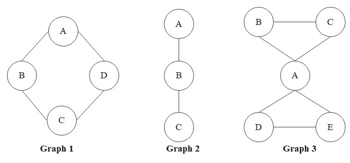

Eulerian
Building on the graph theory foundations, three traversal questions about a graph illustrate strikingly different computational landscapes:
- PATH — given two vertices \(s\) and \(t\), is \(t\) reachable from \(s\)?
- Eulerian cycle — can every edge be traversed exactly once in a closed walk?
- Hamiltonian cycle — can every vertex be visited exactly once in a closed walk?
PATH is solved in polynomial time by breadth-first search; Eulerian admits an even simpler degree-parity test (Euler's theorem below); Hamiltonian, despite its surface similarity to Eulerian, is NP-complete. The remainder of this page develops the contrast between the latter two; PATH reappears when we study walks on graphs and network flow. The complexity-theoretic vocabulary used here is formalized in the theory of computation track.
The Eulerian concept originates from Leonhard Euler's 1736 analysis of the Seven Bridges of Königsberg, widely considered the birth of graph theory. We adopt the strict simple-graph setting from the graph definition; the original Königsberg problem involves a multigraph (parallel bridges between landmasses), which our framework accommodates by collapsing parallel edges and tracking multiplicities separately.
Convention. Throughout this page we use three operational notions of traversal. A walk in \(G\) is a sequence of vertices \(v_0, v_1, \ldots, v_k\) with each consecutive pair \(v_{i-1} v_i\) an edge of \(G\); vertices and edges may repeat. A trail is a walk in which no edge repeats (vertices may still repeat). A walk or trail is closed if \(v_0 = v_k\). A formal owner block for these notions will be developed in network flow; the operational descriptions above suffice for the present chapter.
A graph is Eulerian if it contains an Eulerian cycle (also called an Euler tour) — a closed walk that traverses every edge exactly once. (Vertices may be revisited; only the no-edge-repetition constraint is required, so an Eulerian cycle is in fact a closed trail covering all of \(E\).)
A graph is semi-Eulerian if it contains an Eulerian path (also called an Eulerian trail) with two distinct endpoints — a trail that traverses every edge exactly once but does not close up. By this convention, an Eulerian graph is not also semi-Eulerian: the two classes are disjoint.
A connected graph is Eulerian if and only if every vertex has even degree.

- Graph 1 (the 4-cycle \(C_4\)) is Eulerian: every vertex has degree 2.
- Graph 2 (the path \(A\!-\!B\!-\!C\)) is semi-Eulerian: it admits an Eulerian path \(A \to B \to C\) but no Eulerian cycle, with exactly two odd-degree vertices \(A\) and \(C\).
- Graph 3 (two triangles sharing the vertex \(A\)) is Eulerian: \(A\) has degree 4 and the other vertices have degree 2.
These three small cases match the theorem's degree-parity criterion and exhibit the full range of behaviour: Eulerian, semi-Eulerian, and Eulerian-with-revisits. They confirm the theorem on examples; we now prove it in general.
The forward direction below uses a local pairing argument that is essentially the handshaking lemma applied at each vertex of the cycle. The converse is genuinely constructive: it produces an explicit algorithm. The constructive argument is due to Carl Hierholzer (1873), who showed that the procedure of greedily extending a closed trail and then splicing in further closed sub-trails terminates with an Eulerian cycle. Euler himself proved only the necessity direction in 1736; the constructive sufficiency waited 137 years. We present Hierholzer's argument in self-contained form.
(\(\Rightarrow\)) Suppose \(G\) admits an Eulerian cycle \(C\). Fix any vertex \(v\). Each visit to \(v\) along \(C\) consists of one entering edge paired with one leaving edge, and every edge incident to \(v\) appears in exactly one such pair (by the "every edge exactly once" property). Hence the edges incident to \(v\) split into pairs, so \(\deg(v)\) is even.
(\(\Leftarrow\)) Suppose \(G\) is connected and every vertex has even degree.
Boundary case. If \(|E| = 0\), then \(G\) consists of isolated vertices; connectivity forces \(|V| = 1\), and the trivial walk at the single vertex (length 0) is vacuously an Eulerian cycle. Assume henceforth \(|E| \geq 1\), so by even-degree some vertex has degree \(\geq 2\).
Step 1 (closed trail at a chosen base vertex). Pick any vertex \(v_0\) with \(\deg(v_0) \geq 2\). Build a trail greedily: at each step, if the current endpoint has an unused incident edge, extend the trail along one such edge. The procedure must terminate because \(|E|\) is finite. We claim the trail terminates at \(v_0\).
Indeed, fix any intermediate vertex \(v \neq v_0\). After every full visit to \(v\) (entering and then leaving), exactly two incident edges of \(v\) have been used; immediately after entering \(v\) without yet leaving, the count is odd. Hence at any moment when the trail has just entered \(v\), an odd number of \(v\)-incident edges have been used. Since \(\deg(v)\) is even, at least one unused incident edge remains, and the trail can be extended. Termination is therefore impossible at any \(v \neq v_0\), forcing the trail to close at \(v_0\). Call this closed trail \(C\).
Step 2 (residual subgraph still has even degrees). Let \(G' = (V, E \setminus E(C))\) be the subgraph obtained by removing the edges of \(C\). For each \(v \in V(C)\), the closed trail \(C\) uses an even number of incident edges at \(v\) (each visit pairs an entry with an exit), so \(\deg_{G'}(v) = \deg_G(v) - (\text{even})\) remains even. Vertices outside \(V(C)\) have unchanged even degree.
Step 3 (existence of a splice point). If \(E(C) = E\), then \(C\) is the desired Eulerian cycle and we are done. Otherwise \(G'\) has at least one edge. Suppose for contradiction that no vertex of \(C\) has positive \(G'\)-degree; then every \(G'\)-edge lies entirely in \(V(G) \setminus V(C)\), and no \(G\)-edge connects \(V(C)\) to \(V(G) \setminus V(C)\) other than through edges of \(C\) — but those are removed. This makes \(V(C)\) and \(V(G) \setminus V(C)\) disconnected in \(G\) itself, contradicting connectivity. Hence some \(u \in V(C)\) satisfies \(\deg_{G'}(u) \geq 1\); since \(\deg_{G'}(u)\) is even and positive, in fact \(\deg_{G'}(u) \geq 2\).
Apply Step 1 inside \(G'\) starting at \(u\) to obtain a closed trail \(C'\) in \(G'\) of length at least 2.
Step 4 (splice). The vertex \(u\) appears at least once on \(C\); fix any such occurrence. Form a new closed walk by traversing \(C\) up to that occurrence of \(u\), then traversing all of \(C'\) (which begins and ends at \(u\)), then continuing along the remainder of \(C\). The result is a closed walk in \(G\) using exactly \(E(C) \cup E(C')\), a disjoint union (\(E(C')\) lies in \(G'\)), so no edge is repeated. The result is therefore a closed trail strictly longer than \(C\).
Termination. Replace \(C\) by the spliced trail and return to Step 2. Each iteration strictly increases the edge count of \(C\) by at least 2, and \(|E|\) is finite, so the procedure halts after finitely many iterations with \(E(C) = E\) — an Eulerian cycle. \(\blacksquare\)